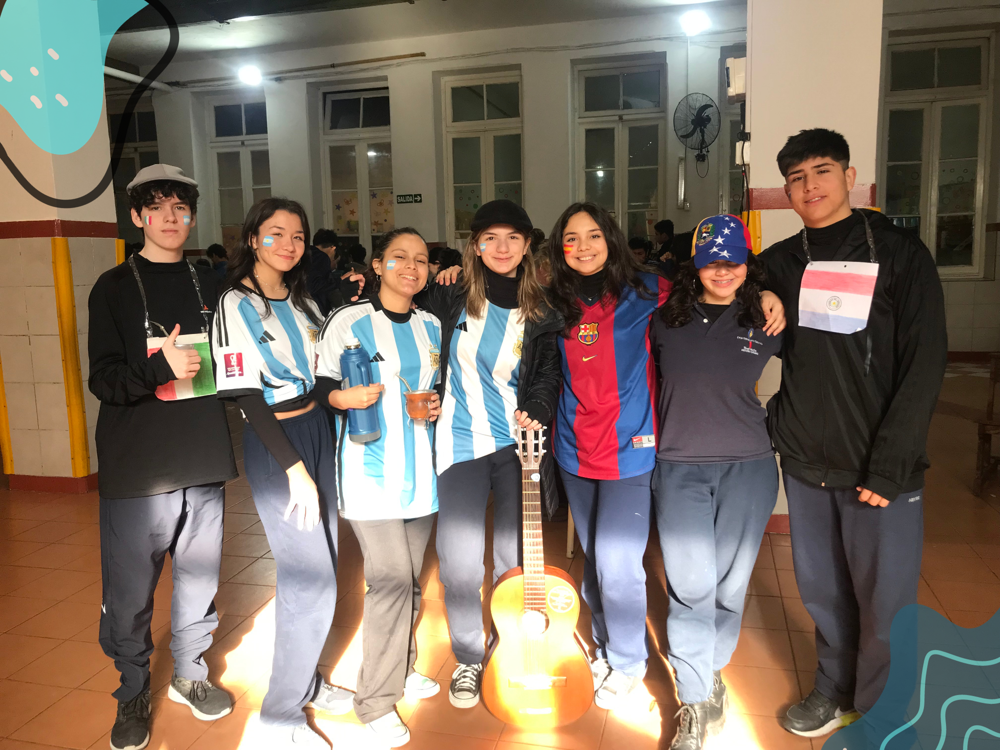
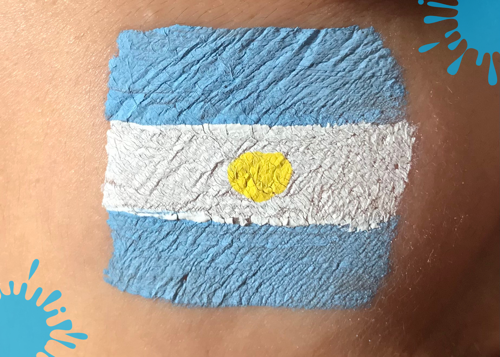
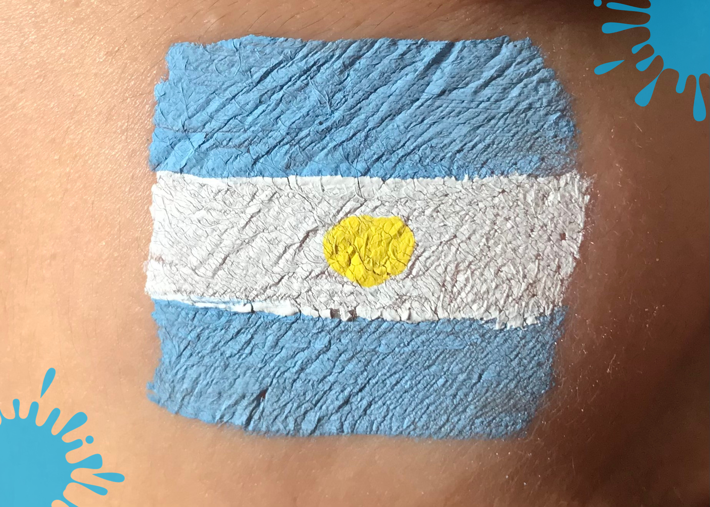
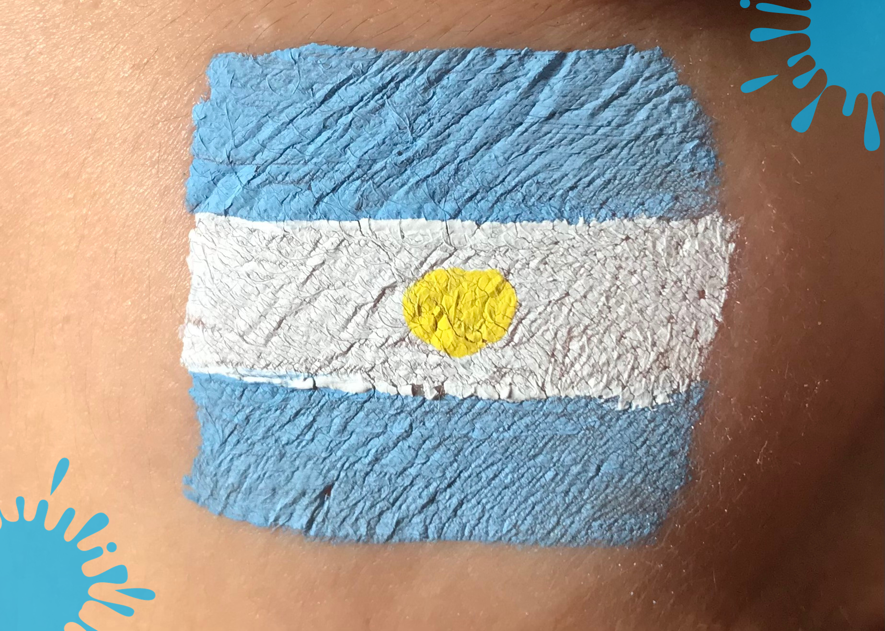

Acto 9 de Julio
Por: Azul Peluso 5ºB
El día de la fecha los alumnos asistieron al acto, que con mucho cariño 3ºB armó para conmemorar la fecha patria

 

El dia 7 de julio los alumnos de 3B del espíritu santo realizaron un acto conmemorando la importante fecha argentina, en el mismo los alumnos realizaron una payada,arte poético musical donde una persona improvisa un recitado en rima acompañado de una guitarra, en este caso con un enfoque a la independencia de la argentina, varios alumnos bailaron tango con la ayuda de yanina, recitaron un poema de la independencia y dos alumnas de quinto año, azul peluso y julia diana realizaron un video preguntando a distintas personas de la institución para ellos que era la independencia. En conclusión un acto muy emocionante feliz 9 de julio!!!!
